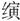
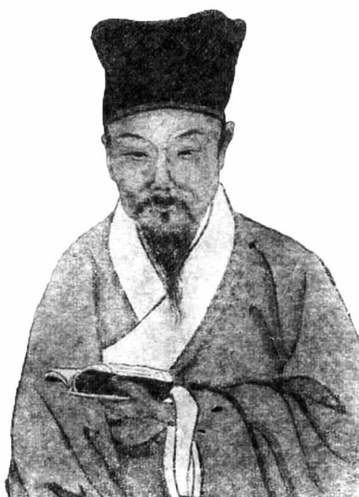

二
虽然我们不会像孔尚任那样，把明朝消亡仅仅归结于政治和道德；毕竟，将近四百年之后，我们已经走出了古典兴亡观及其话语体系，而拥有更多的观察角度和不同的思考方向。可是，《桃花扇》所着力表现的内容，在短命的弘光朝历史中仍有分量，乃至是相当重的分量。
这是那时代所特有的事实。
从1644年5月下旬围绕“定策”发生的明争暗斗，到翌年6月3日（乙酉年五月初十）朱由崧出逃，一年之内，南京几乎没有哪件事与党争无关。岂但如此，我们对弘光朝各项事业，从政治到军事，从民生到制度，均留下无头苍蝇般的印象，从头到尾，一盆浆糊，没有完整做成一件事，全都虎头蛇尾、半途而废，或干脆只形诸语言不见于行动——权举一例，从皇帝到群臣一致信誓旦旦、反复念及的恢复中原、为先帝复仇，也根本停留在口头，直到最后也不曾实质性地发出一兵一卒；而唯独对于一件事，人们贯穿始终、全力以赴、未尝稍懈，这便是党争。福王之立、马士英当政、史可法出督、阮大铖起复、张慎言刘宗周姜曰广吕大器高弘图等先后罢退、左良玉反叛……所有的重大政治变故，差不多都酿自党争。直至崩溃前一个月，马阮集团全神贯注去做的，仍是针对东林—复社阵营罗织罪名、图兴大狱，并以处决其中两个活跃分子周镳、雷祚，作为高潮。
它的根源，有远有近。
远的，是万历、天启、崇祯三朝一系列起起伏伏，其中有两大关节：一是天启年间魏忠贤、客氏当道，屠戮东林；一是崇祯登基后定阉党为“逆案”。更多的头绪，先前我们已有交代，读者若有不明，重温即可，不复赘及。
我们将了解的重点，放在近处。那是崇祯十一年（1638）秋天发生的一桩事，内容便是吴应箕在《桃花扇》第一出所说的“小弟做了一篇留都防乱的揭帖”。
这份揭帖名叫《留都防乱公揭》。先解释几个名词：古代把公开张贴的启事、告示称作“揭帖”；“揭”是它的简称；“公揭”，则是有多人具名的揭帖；至于“留都”，指的是南京。如若转为当代语，《留都防乱公揭》略同于一张由南京部分人士集体署名的街头大字报。
列名其上的“南京部分人士”，多达百四十余。朱希祖先生曾以专文对具体人数进行考辨[9]，我们在此且不管它，而着重注意上述人数所表现出来的声势。倘在今日，一张百人签名的大字报也许算不了什么，但这是在将近四百年以前，当时，受过一定教育的人纵非万里挑一，千里挑一总是差不多的。所以，能有百人签名，这张大字报在知识界显然具有相当的代表性。
代表谁呢？主要是复社。这是明末的一个知识同人团体，欲知该团体势力如何，我们来看眉史氏《复社纪略》的记载。据它说，早在十年前，亦即戊辰年（崇祯元年，1628），以姑苏为首，各地青年学人社团（复社前身）成员即达七百多人；书中将这些姓名逐一开具，然后叹道：
按目计之，得七百余人，从来社集未有如是之众者！计文二千五百余首，从来社艺亦未有如是之盛者！嗣后名魁鼎甲多出其中，艺文俱斐然可观；经生家莫不尚之，金阊书贾，由之致富云。[10]
天下读书人，没有不崇尚复社的，甚至出版家也靠印他们的书发了财。《桃花扇》里就有这么一位书商蔡益所，专刻复社名流之作；他上场时以“贸易诗书之利”、“流传文字之功”[11]自夸，倒是出版家的外俗内雅的好对。
须知以上尚是1628年的情形，又经十几年，复社势力之膨胀简直令人侧目。阮大铖曾这样煽动马士英：“孔门弟子三千，而维斗等聚徒至万，不反何待？”[12]维斗乃复社领袖之一杨廷枢的表字，阮大铖说他“聚徒至万”，肯定是危言耸听，以说动马士英出手镇压。另有说法称，杨廷枢“声誉日隆，门下著录者三千人”[13]，这大约比较客观。仅仅杨廷枢一人，身后追随者即达三千；其他复社巨擘就算达不到这种规模，但把每个人的影响面都计算起来，无论如何会是个使人瞠目的数字。难怪有人要愤愤不平地告御状说：“东南利孔久湮，复社渠魁聚敛。”[14]
复社兴起，有一实一虚两个背景。前者是崇祯初年定阉党为逆案，为东林平反，形成一种直接而具体的刺激，令读书人志气大长，而东南一带原系东林渊薮，此地年轻后学，率先跃起，集会结社、谈经论世、指斥方遒。至于后者，则须联系晚明整体精神思想氛围。主要自王阳明以来，明人讲学之风大兴。笔者曾往泰州崇儒祠谒访，得见当年王艮为外出讲学，仿孔子周游列国的车制而自制的蒲轮车，虽非原物，而是今人想象下的赝品，却也提供了一种形象。据说他就乘着这古简之车，从江西出发，沿途聚讲，直抵北京。明末学派林立，就是讲学风盛所致。“东林”被诬为“党”之前，其实是个书院的名称，无锡至今有其址。万历二十二年（1594），顾宪成忤旨革职，返乡讲学，重修东林书院并任主持，名儒耆宿纷至沓来，很快成为思想、学术重镇，最终给朝政以深刻影响。东林模式或东林经验，既激于时代，反过来也是对时代的有力印证；由于经过了思想、历史、伦理层面的究问与反思，历来士大夫作为王朝政治“齿轮与螺丝钉”的那种功能，明显朝着带有自我意识的知识分子政治独立性转化了，所以，整个明末知识分子阶层的斗争性、反叛性以及基于思想认同的群体意识，空前提高和增加，乃至现代的知识分子已可以从他们身上嗅到一些亲切熟悉的气息，这是从未有过的。
复社，作为东林的延续，而且基于对后者经验的汲取，意识上更加自觉，一开始就迅速迈向组织化和统一。《复社纪略》记载：
是时（壬申年，1632）江北匡社、中洲端社、松江几社、莱阳邑社、浙东超社、浙西庄社、黄州质社，与江南应社，各分坛坫，天如（张溥，表字天如）乃合诸社为一，而为之立规条，定课程曰：“自世教衰，士子不通经术，但剽耳绘目，几倖弋获（“弋获”，获得、获取之意）于有司。登明堂不能致君，长郡邑不知泽民；人材日下，吏治日偷，皆由于此。溥不度德，不量力，斯与四方多士共兴复古学，将使异日者务为有用，因名曰‘复社’。”又申盟词曰：“毋非圣书，毋违老成人，毋矜己长，毋形彼短，毋巧言乱政，毋干进辱身。嗣今以往，犯者小用谏，大则摈。既布天下，皆遵而守之。”又于各郡邑中推择一人为长，司纠弹要约，往来传置。[15]

复社领袖张溥。
晩明，启蒙思想趋于活跃，尤其崇祯皇帝即位后将阉党铲除，使这种现象释放出更大能量，东南一带涌现大批青年士子的思想学术社团。1632年，张溥“合诸社为一”，名曰“复社”，为社会和政治的改进探寻出路。
南京牛首山塔。
牛首山在南京南郊，以双峰如牛角而名。《留都防乱揭帖》使阮大铖避居于此。
这件材料，将复社诞生经过、名称含义、创始者等各方面情况，录述甚确。我们可以认定：第一，这是一个从思想认识到组织形式相当成熟的社团，有宗旨、有规章，而且是跨越多地（从河南、山东到江浙、湖广）的全国性组织；第二，这是一个兼顾学术与政治的组织，由学术而政治、由政治而学术，学用相济、理论与实践相结合；这意味着，它注重思想性，是学人和知识分子而非官僚与政客的团体，但又不同于闭门式的单纯读书会，强调所学所思“务为有用”，目标最终指向社会政治探索。以此观之，复社是针对社会、政治改进寻找思想之路的共同体，这一精神内核与现代政党已很接近。
至于张溥以“兴复古学”诠释“复社”之名，我们不必为其字眼所拘。一来这跟张溥个人思想主张有关，我们知道他推崇前后七子的复古论；二来在中国历史上以及古代语境中，“复古”往往是现实批判的好用工具，“改制”者往往“托古”。与复社从内容到形式的鲜明的历史创新性相比，“兴复古学”一类遣词，不会迷惑我们。相反的，我们恰要指出，复社的主体是晚生后辈，跟其前驱东林相比，年轻气盛乃其突出特点。东林的构成，几乎清一色是朝臣，纵不位居要津，亦有一官半职，抑或为致仕之名宦。复社成员相反，比如我们较熟知的吴应箕及所谓“明末四公子”陈贞慧、侯方域、方以智、冒襄，除方以智登过进士，余皆为诸生。他们的年龄，或许不算真正年轻（最年长的吴应箕，主笔《留都防乱公揭》时年已四十四），但心态究非登堂入室的心态，普遍看上去疏狂不忌，这其实亦是锐气使然。
如果我们以复社成员为“学生群体”，则可以将复社视如明末的“学生组织”，而《留都防乱公揭》事件便是这群体和组织掀起的一场“学生运动”。它有着明显的青春色彩和青春气质，冲动、激昂、理想主义，同时也不免浮夸、偏执、耸人听闻。现代学潮所表现的那些特点，此一事件基本应有尽有。比如，不妨比照着“五四运动”来想象1638年8月复社学子们之所为，一样的自视进步、崇高、热血，也一样的不容置疑、唯我独尊、霸气十足。和诸多现代学潮一样，它也缺陷明显，很有待商榷乃至可诟病之处，但这都不能掩其历史价值。它是发生在传统权力空间（庙堂）之外的群众性政治运动，有着自发性、自主性，独立表达了一种声音与诉求；远在十七世纪上叶，中国出现这一幕，颇能说明知识阶层的思想活力，以及对权力加以分割的意愿，这些深层次内容盖过了它的某些缺陷。